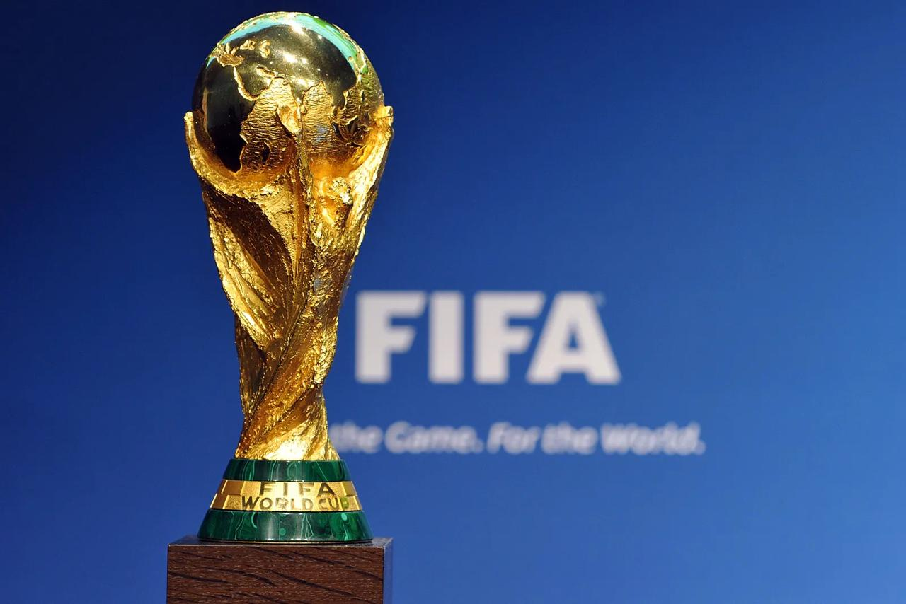

La Copa Mundial de la FIFA es el torneo internacional de fútbol más prestigioso y popular del planeta. Organizado cada cuatro años por la Fédération Internationale de Football Association (FIFA), reúne a las selecciones nacionales de fútbol de todo el mundo para competir por el título de campeón mundial. Desde su primera edición en 1930, el torneo ha crecido en escala, impacto cultural y valor económico, consolidándose como un evento global que trasciende el deporte 